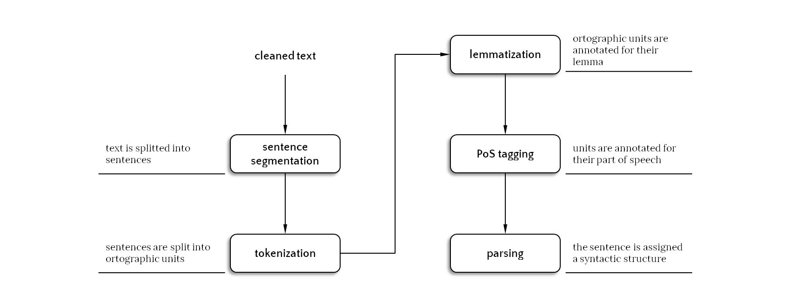

Working with texts
Contents
Working with texts¶
Text Normalization and Pre-processing Pipelines.
Let’s go back to our brief introduction to working with texts and expand upon it some more (see NOTEBOOK 5).
NLTK vs. spaCY
The code below gives examples of using NLTK (https://www.nltk.org/) modules on text. You may want to check out the relatively new spaCY (https://spacy.io/usage) package. Depending on the tasks you need to do and the language data that is available, this module offers a faster and more advanced, and more intuitive method to do Natural Language Processing on texts.
The spaCY documentation pages (e.g. https://spacy.io/usage/linguistic-features) provide a lot of examples.
A Standard Natural Language Processing (NLP) Pipeline¶
What we hope to get as the final result…¶
Go on the Stanford CoreNLP online demo and parse the following sentence:
I think there is a world market for maybe five computers.
(allegedly said by Thomas J. Watson, CEO of IBM, in 1943)
This might be useful: list of Penn Treebank POS tags.
A Few Recommendations¶
NLTK (Python)¶
has a variety of ready/easy-to-use implementations in several languages (some tools available for Dutch as well)
has a variety of APIs for other packages (e.g. Stanford CoreNLP)
lacks Information Extraction features (e.g. coreference resolution, relation extraction)
several implementations are not state-of-the-art and/or are rather slow
Stanford CoreNLP (Java)¶
includes virtually any NLP tool
basic distribution for English, but models for the following languages are available: Arabic, Chinese, French, German, and Spanish
implementations are often State-of-the-Art (though some component may not be the most efficient)
has Python wrappers
needs a bit more technical skills than using NLTK
spaCy (Python)¶
industry-ready: scale, performance, getting things done, lacks some flexibility
many models for many languages: English German French Spanish Portuguese Italian Dutch Greek
implementations are often State-of-the-Art
has Python wrappers and the very clean “spaCy pipeline” programming interface
comes with many machine learning pre-trained models
pattern (NL-EN/Python)¶
toolbox for Dutch
easy to use
contains modules for PoS tagging, sentiment analysis and a WordNet interface
many interesting datasets available
available for English as well
When to use what? Chose by yourself: https://spacy.io/usage/facts-figures
Task-dependent choices¶
A note on terminology:¶
Type = abstract ideal form of a sequence of characters (not necessarily a word in a language!)
Token = instantiation of a type in our corpus or document
For example: to be or not to be.
6 tokens (to, be, or, not, to, be)
4 types (to, be, or, not)
The types coincide with the vocabulary.
Note that not all types might be proper words nor have a related lemma in an external lexicon.
Cleaning¶
remove lists, tables, figure captions, page headers, etc.
text from XML/HTML: remove unwanted code (e.g. head elements, boilerplates, comments, javascript code).
text from PDF: remove noisy characters
OCR errors are systematic: e.g. an “
m” recognized as a “rn”, an “e” as a “c”, an “l” as a “1”, an “f” recognized as a “s”.
Normalization and filtering¶
Reducing the valid vocabulary space or even the text itself by filtering or standardizing. Standardizing might be considered as the task of creating equivalence classes of types. These decisions are application-dependent, might come from trial and error but should motivated in principle.
lowercasing and abbreviations. If you want “
Train” and “train” to be counted as token of the same type, you should.lower()the text, however case-folding may remove disciminative information, e.g., “U.S.” “US” vs. “us”.Hyphenation, accents, … (”
text-minig”, “textmining”, “text mining”; “cliche”, “cliché”)Punctuation, digits, misspells, …
Very frequent or very rare words.
Stopwords (usually, these are very frequent words!).
Specialized portions of the text (e.g., footnotes).
Normalization can also be done via relations, e.g. considering “
car” and “automobile” as synonyms. We can use WordNet for that.
The example below assumes nltk is installed and set up. If you get a
LookupErrorwhile running, it is likely nltk needs to download its materials first. Follow the error and runnltk.download('stopwords')in a cell once.
import nltk
from nltk.corpus import stopwords
", ".join(set(stopwords.words('french')))
---------------------------------------------------------------------------
ModuleNotFoundError Traceback (most recent call last)
Input In [1], in <module>
----> 1 import nltk
2 from nltk.corpus import stopwords
4 ", ".join(set(stopwords.words('french')))
ModuleNotFoundError: No module named 'nltk'
Sentence Segmentation (NLTK)¶
In its base form, a text is a stream of characters.
import nltk
# nltk.download('gutenberg') # Run if you get an LookupError
---------------------------------------------------------------------------
ModuleNotFoundError Traceback (most recent call last)
Input In [2], in <module>
----> 1 import nltk
ModuleNotFoundError: No module named 'nltk'
text = nltk.corpus.gutenberg.raw('chesterton-thursday.txt')
print(text[:1010])
---------------------------------------------------------------------------
NameError Traceback (most recent call last)
Input In [3], in <module>
----> 1 text = nltk.corpus.gutenberg.raw('chesterton-thursday.txt')
2 print(text[:1010])
NameError: name 'nltk' is not defined
nltk.corpus.gutenberg.fileids()
---------------------------------------------------------------------------
NameError Traceback (most recent call last)
Input In [4], in <module>
----> 1 nltk.corpus.gutenberg.fileids()
NameError: name 'nltk' is not defined
The first NLP processing step is the identification of the sentence boundaries:
some pipelines perform the sentence splitting phase before the tokenization (e.g., NLTK)
while other uses information about the tokens (e.g., CoreNLP) and/or about the parse tree (e.g., spaCy) to identify sentence boundaries
The example below uses the built-in Gutenberg corpus of NLTK.
# Getting rid of newlines
text = nltk.corpus.gutenberg.raw('chesterton-thursday.txt')
text = text.replace("\n", " ")
print(text[:800])
---------------------------------------------------------------------------
NameError Traceback (most recent call last)
Input In [5], in <module>
1 # Getting rid of newlines
----> 2 text = nltk.corpus.gutenberg.raw('chesterton-thursday.txt')
3 text = text.replace("\n", " ")
5 print(text[:800])
NameError: name 'nltk' is not defined
# Alternatively, the NLTK corpus sents() returns the tokenized words as well
for sentence in nltk.corpus.gutenberg.sents('chesterton-thursday.txt')[:8]:
print(" ".join(sentence))
---------------------------------------------------------------------------
NameError Traceback (most recent call last)
Input In [6], in <module>
1 # Alternatively, the NLTK corpus sents() returns the tokenized words as well
----> 2 for sentence in nltk.corpus.gutenberg.sents('chesterton-thursday.txt')[:8]:
3 print(" ".join(sentence))
NameError: name 'nltk' is not defined
… but what is a sentence?
something ending with “
.”, “!” or “?”, maybe?
import re
re.split(r"[.?!]", text[:800])
---------------------------------------------------------------------------
NameError Traceback (most recent call last)
Input In [7], in <module>
1 import re
----> 2 re.split(r"[.?!]", text[:800])
NameError: name 'text' is not defined
print(text[:200])
---------------------------------------------------------------------------
NameError Traceback (most recent call last)
Input In [8], in <module>
----> 1 print(text[:200])
NameError: name 'text' is not defined
Not really, a period can be used also to denote:
an abbreviation (47% of the periods in the Wall Street Journal denote abbreviations)
decimal point
ellipsis
url or e-mail address…
Question marks and exclamation marks can be used in:
emoticons and slang
computer code
embedded quotations…
Even if heuristic solutions are conceivable (e.g. CoreNLP)…
e.g. a period is not a sentence boundary if the preceding token is title-cased
…the best option is to treat the sentence boundary identification as a binary classification problem (e.g. NLTK), in which possible features can be:
case of the surrounding tokens
length of the surrounding tokens
lemma/type/form of the surrounding tokens
Tokenizing sentences¶
NLTK has a built-in module for tokenizing sentences that takes into account these features. It returns a sentence-tokenized copy of a text, using NLTK’s recommended sentence tokenizer.
for sent in nltk.tokenize.sent_tokenize(text[:1010]):
print(sent)
print()
---------------------------------------------------------------------------
NameError Traceback (most recent call last)
Input In [9], in <module>
----> 1 for sent in nltk.tokenize.sent_tokenize(text[:1010]):
2 print(sent)
3 print()
NameError: name 'nltk' is not defined
The accuracy of these classifiers can be as high as over 99%
NLTK come packed with classifiers trained on 17 languages, among which Dutch:
there are methods that allows you to train your own models as well. This can be useful if you want to process special texts like tweets or facebook messages…
a_dutch_email = """Uw abonnement op uw OV-chipkaart activeren.
Het is belangrijk dat u het abonnement op uw OV-chipkaart activeert.
Dit kunt u doen bij de NS-kaartautomaat of bij één van de overige ophaalpunten voor de OV-chipkaart. Kijk voor een overzicht van de ophaalpunten op www.ov-chipkaart.nl/adresvinder.
Hoe activeert u uw abonnement bij de NS-kaartautomaat?
Houd uw OV-chipkaart voor de kaartlezer rechts onder het scherm.
Kies 'Ophalen bestelling' en volg de aanwijzingen op het scherm.
Voordat u aan uw reis begint dient er minimaal €10,- saldo op uw OV-chipkaart te staan.
Vergeet niet in en uit te checken tijdens uw reis.
Heeft u nog vragen?
We helpen u graag verder. Kijk op www.ns.nl of stel uw vraag op het NS Serviceforum (www.ns.nl/forum). U kunt ook contact opnemen met NS Klantenservice via telefoonnummer 030 - 751 51 55 of via Twitter @NS_online. We staan dag en nacht voor u klaar.
"""
# To make it a bit harder for the tokenizer, present it as one paragraph without line breaks.
test_text = a_dutch_email.replace('\n', ' ')
nltk.tokenize.sent_tokenize(test_text, language='dutch')
---------------------------------------------------------------------------
NameError Traceback (most recent call last)
Input In [12], in <module>
----> 1 nltk.tokenize.sent_tokenize(test_text, language='dutch')
NameError: name 'nltk' is not defined
Tokenization (NLTK)¶
Tokenization is the task of splitting a string of characters into chunks of characters.
It is a task that is usually tackled with rule-based or regex-based algorithms.
# It can be performed BEFORE sentence splitting
# Here: one list of words (tokens) in the text
words = nltk.corpus.gutenberg.words('chesterton-thursday.txt')
print(words[:226])
---------------------------------------------------------------------------
NameError Traceback (most recent call last)
Input In [13], in <module>
1 # It can be performed BEFORE sentence splitting
2 # Here: one list of words (tokens) in the text
----> 4 words = nltk.corpus.gutenberg.words('chesterton-thursday.txt')
6 print(words[:226])
NameError: name 'nltk' is not defined
# It can be performed AFTER sentence splitting
# Here: one list of lists (sentences) that contains words (tokens)
sents = nltk.corpus.gutenberg.sents('chesterton-thursday.txt')
for s in sents[:8]:
print(s)
---------------------------------------------------------------------------
NameError Traceback (most recent call last)
Input In [14], in <module>
1 # It can be performed AFTER sentence splitting
2 # Here: one list of lists (sentences) that contains words (tokens)
----> 4 sents = nltk.corpus.gutenberg.sents('chesterton-thursday.txt')
6 for s in sents[:8]:
7 print(s)
NameError: name 'nltk' is not defined
Some of the most recurrent issues with Tokenization in English:
contractions: I’m, isn’t, Gianluca’s
emoticons: :), ;-)
proper names: J.K. Rowling, F.B.I., O’Neill
hyphenation can be used in many ways:
single word: e-mail, co-operation
how many words? so-called, pro-gun
grouping of words for non-strictly-linguistic purposes: take-it-or-leave
multi word expressions (MWE) and collocations:
phrasal verbs: give up, work out, move in
multi-token proper names: New York, Las Vegas
compound nominals: car park, attorney general, part of speech
…
The complexity of this task is also language-dependent:
e.g. compounds in German: Donaudampfschifffahrtselektrizitätenhauptbetriebswerkbauunterbeamtengesellschaft (i.e. “Association for subordinate officials of the head office management of the Danube steamboat electrical services”)
Chinese is written without spaces between words: 天花 (“small pot”) vs. 天 (“sky”) and 花 (“flower”).
Simplest (but suboptimal) solution: segment around space characters
tokens = text.split()
print(tokens[:200])
---------------------------------------------------------------------------
NameError Traceback (most recent call last)
Input In [15], in <module>
----> 1 tokens = text.split()
3 print(tokens[:200])
NameError: name 'text' is not defined
There are many issues with this solution, among which the production of tokens such as 'plume.', 'thus;' and 'were--our'
NLTK’s recommended word tokenizer is the Penn nltk.tokenize.TreebankWordTokenizer().tokenize(), that can be called in many ways, among which the easier is by using the nltk.tokenize.word_tokenize() wrapper:
# This is the same as nltk.tokenize.TreebankWordTokenizer().tokenize(text[:1010])
tokens = nltk.tokenize.word_tokenize(text)
print(tokens[:200])
---------------------------------------------------------------------------
NameError Traceback (most recent call last)
Input In [16], in <module>
1 # This is the same as nltk.tokenize.TreebankWordTokenizer().tokenize(text[:1010])
----> 3 tokens = nltk.tokenize.word_tokenize(text)
5 print(tokens[:200])
NameError: name 'nltk' is not defined
NLTK offers alternative word tokenizer, that may be more appropriate according to the applications you are developing
nltk_text = 'That U.S.A. poster-print doesn\'t cost $12.40...'
print(nltk_text.split())
['That', 'U.S.A.', 'poster-print', "doesn't", 'cost', '$12.40...']
nltk_text = 'That U.S.A. poster-print doesn\'t cost $12.40...'
print(nltk.tokenize.word_tokenize(nltk_text))
---------------------------------------------------------------------------
NameError Traceback (most recent call last)
Input In [18], in <module>
1 nltk_text = 'That U.S.A. poster-print doesn\'t cost $12.40...'
----> 2 print(nltk.tokenize.word_tokenize(nltk_text))
NameError: name 'nltk' is not defined
# nltk.tokenize.wordpunct_tokenize splits all punctuations into separate tokens
print(nltk.tokenize.wordpunct_tokenize(nltk_text))
---------------------------------------------------------------------------
NameError Traceback (most recent call last)
Input In [19], in <module>
1 # nltk.tokenize.wordpunct_tokenize splits all punctuations into separate tokens
----> 2 print(nltk.tokenize.wordpunct_tokenize(nltk_text))
NameError: name 'nltk' is not defined
# nltk.regexp_tokenize() allows you to build a customized tokenizer by specifying a regex pattern
pattern = r'''(?x) # set flag to allow verbose regexps
(?:[A-Z]\.)+ # abbreviations, e.g. U.S.A.
|\w+(?:-\w+)* # words with optional internal hyphens
|\$?\d+(?:\.\d+)?%? # currency and percentages, e.g. $12.40, 82%
|\.\.\. # ellipsis
|[][.,;"\'?():-_`] # these are separate tokens
'''
nltk.regexp_tokenize(nltk_text, pattern)
---------------------------------------------------------------------------
NameError Traceback (most recent call last)
Input In [20], in <module>
1 # nltk.regexp_tokenize() allows you to build a customized tokenizer by specifying a regex pattern
2 pattern = r'''(?x) # set flag to allow verbose regexps
3 (?:[A-Z]\.)+ # abbreviations, e.g. U.S.A.
4 |\w+(?:-\w+)* # words with optional internal hyphens
(...)
7 |[][.,;"\'?():-_`] # these are separate tokens
8 '''
---> 10 nltk.regexp_tokenize(nltk_text, pattern)
NameError: name 'nltk' is not defined
Stemming and Lemmatization¶
The goal of both stemming and lemmatization is to reduce inflectional forms (e.g. dreaming, dreamed) and sometimes derivationally related forms of a word to a common “base form” (e.g. eat).
Stemming targets the stem, or the part of a word which remains stable to inflectional manipulations. E.g., “eats” -> “eat”.
Lemmatization targets the lemma, or the canonical dictionary key associated with the word. E.g., “is” -> “be”.
Stemming¶
Stemming in practice usually refers to a crude heuristic process that (usually) removes the inflectional suffixes of a word
The result of stemming might not be an actual word
Stemmers are very fast and do not require PoS information
NLTK offers several algorithms, among which the most used are:
the Porter Stemmer: the oldest algorithm (1979), it is regex-based, it is still the most used even if more computationally intensive
the algorithm consists of 5 phases of word reductions, applied sequentially as a cascade.
Example of rules in phase 1:
SSES -> SS (caresses -> caress)
IES -> I (ponies -> poni)
S -> (cats -> cat)
Example of rules in phase 5 (measuring if a token could stand by itself):
EMENT -> (would reduce replacement to replac, but leave cement as cement because “
c” alone is too short)
nltk.PorterStemmer().stem("unfriendliness")
---------------------------------------------------------------------------
NameError Traceback (most recent call last)
Input In [21], in <module>
----> 1 nltk.PorterStemmer().stem("unfriendliness")
NameError: name 'nltk' is not defined
nltk.PorterStemmer().stem("cements")
---------------------------------------------------------------------------
NameError Traceback (most recent call last)
Input In [22], in <module>
----> 1 nltk.PorterStemmer().stem("cements")
NameError: name 'nltk' is not defined
nltk.PorterStemmer().stem("replace")
---------------------------------------------------------------------------
NameError Traceback (most recent call last)
Input In [23], in <module>
----> 1 nltk.PorterStemmer().stem("replace")
NameError: name 'nltk' is not defined
the Lancaster Stemmers: the most aggressive
# aggressive
nltk.LancasterStemmer().stem("unfriendliness")
---------------------------------------------------------------------------
NameError Traceback (most recent call last)
Input In [24], in <module>
1 # aggressive
----> 2 nltk.LancasterStemmer().stem("unfriendliness")
NameError: name 'nltk' is not defined
nltk.LancasterStemmer().stem("cements")
---------------------------------------------------------------------------
NameError Traceback (most recent call last)
Input In [25], in <module>
----> 1 nltk.LancasterStemmer().stem("cements")
NameError: name 'nltk' is not defined
# sometimes works better than the Porter Stemmer
print(nltk.PorterStemmer().stem("happiness"))
print(nltk.LancasterStemmer().stem("happiness"))
print(nltk.stem.snowball.SnowballStemmer("english").stem("happiness"))
---------------------------------------------------------------------------
NameError Traceback (most recent call last)
Input In [26], in <module>
1 # sometimes works better than the Porter Stemmer
----> 2 print(nltk.PorterStemmer().stem("happiness"))
3 print(nltk.LancasterStemmer().stem("happiness"))
4 print(nltk.stem.snowball.SnowballStemmer("english").stem("happiness"))
NameError: name 'nltk' is not defined
Snowball is a language for creating stemmers, and is available in many languages among which Dutch:
print(nltk.stem.snowball.SnowballStemmer.languages)
---------------------------------------------------------------------------
NameError Traceback (most recent call last)
Input In [27], in <module>
----> 1 print(nltk.stem.snowball.SnowballStemmer.languages)
NameError: name 'nltk' is not defined
Wanna see a demo on how it works in dutch? Try
nltk.stem.snowball.demo()
As a general rule, the SnowballStemmer for English (a.k.a. Porter2), works better than the original Porter stemmer
print(nltk.PorterStemmer().stem("generously"))
print(nltk.stem.snowball.SnowballStemmer("english").stem("generously"))
---------------------------------------------------------------------------
NameError Traceback (most recent call last)
Input In [28], in <module>
----> 1 print(nltk.PorterStemmer().stem("generously"))
2 print(nltk.stem.snowball.SnowballStemmer("english").stem("generously"))
NameError: name 'nltk' is not defined
Lemmatization¶
Lemmatizers use a vocabulary and morphological information to apply a more articulated set of rules in order to return actual lemmas (a.k.a. dictionary entries)
Again, download any missing NLTK modules if you get a
LookupError.
The WordNet lemmatizer removes the affixes of a token only if the resulting lemma is in WordNet
It is based on the WordNet
morphyfunction
# Irregularities are easier to handle with a lemmatizer (if the word is in the vocabulary)
nltk.WordNetLemmatizer().lemmatize("women")
---------------------------------------------------------------------------
NameError Traceback (most recent call last)
Input In [29], in <module>
1 # Irregularities are easier to handle with a lemmatizer (if the word is in the vocabulary)
----> 2 nltk.WordNetLemmatizer().lemmatize("women")
NameError: name 'nltk' is not defined
# But it doesn't really handle some inflected forms ...
nltk.WordNetLemmatizer().lemmatize("flying")
---------------------------------------------------------------------------
NameError Traceback (most recent call last)
Input In [30], in <module>
1 # But it doesn't really handle some inflected forms ...
----> 2 nltk.WordNetLemmatizer().lemmatize("flying")
NameError: name 'nltk' is not defined
# ... but it is a PoS tagging issue, really. Let's tell it that we have the verb
verb = nltk.WordNetLemmatizer().lemmatize("flying", pos="v")
print("Verb", verb)
# Compare
noun = nltk.WordNetLemmatizer().lemmatize("flying", pos="n")
print("Noun", noun)
---------------------------------------------------------------------------
NameError Traceback (most recent call last)
Input In [31], in <module>
1 # ... but it is a PoS tagging issue, really. Let's tell it that we have the verb
----> 2 verb = nltk.WordNetLemmatizer().lemmatize("flying", pos="v")
3 print("Verb", verb)
5 # Compare
NameError: name 'nltk' is not defined
A quick-and-dirty comparison of Stemmers and the WN Lemmatizer¶
stemmers = [
nltk.PorterStemmer().stem,
nltk.stem.snowball.SnowballStemmer("english").stem,
nltk.LancasterStemmer().stem,
nltk.WordNetLemmatizer().lemmatize
]
words = ['caresses', 'flies', 'flying', 'mules', 'denied', 'agreed', 'humbled', 'sized', 'meeting', 'stating',
'itemization', 'sensational', 'traditional', 'reference', 'colonizer', 'provision', 'cement', 'women']
print("INPUT", "\t\t\t", "Porter", "\t", "Snowball", "\t", "Lancaster", "\t", "WN Lemmatizer")
print("-" * 89)
for word in sorted(words):
print(word, " ", end='')
for stemmer_function in stemmers:
print("\t\t", stemmer_function(word), end='')
print()
---------------------------------------------------------------------------
NameError Traceback (most recent call last)
Input In [32], in <module>
1 stemmers = [
----> 2 nltk.PorterStemmer().stem,
3 nltk.stem.snowball.SnowballStemmer("english").stem,
4 nltk.LancasterStemmer().stem,
5 nltk.WordNetLemmatizer().lemmatize
6 ]
8 words = ['caresses', 'flies', 'flying', 'mules', 'denied', 'agreed', 'humbled', 'sized', 'meeting', 'stating',
9 'itemization', 'sensational', 'traditional', 'reference', 'colonizer', 'provision', 'cement', 'women']
11 print("INPUT", "\t\t\t", "Porter", "\t", "Snowball", "\t", "Lancaster", "\t", "WN Lemmatizer")
NameError: name 'nltk' is not defined
How to choose?¶
As a rule of thumb:
if you need to work with real words, use a lemmatizer (PoS information helps a lot)
if you need speed, choose a stemmer
if want to link morphological derivations (e.g. “dreamable”) to their bases, a stemmer can be a quick-and-dirty solution
PoS Tagging¶
The proccess of automatically classifying words into their lexical categories
lexical categories are also called words classes, parts-of-speech, lexical tags…
Lexical categories are divided into two main groups:
open word classes which constantly acquire new members:
nouns, verbs, adjectives and adverbs
closed class when their inventory does not change over time (or much less so):
e.g., pronouns, determiners, prepositions, conjunctions, auxiliary and modal verbs, numerals…
The collection of PoS tags used for a particular task is known as a tagset
The most common English tagset is the Penn Treebank one, containing the following tags:
# You might need to do this to download the related resource
# nltk.download('tagsets')
# nltk.download('universal_tagset')
# nltk.download('brown')
nltk.help.upenn_tagset()
---------------------------------------------------------------------------
NameError Traceback (most recent call last)
Input In [34], in <module>
----> 1 nltk.help.upenn_tagset()
NameError: name 'nltk' is not defined
Some distinctions are quite hard for both humans and machines :
preposition (IN), particle (RP) or adverb (RB)?
You’ll never get around/RP to watching all those movies
Let’s go around/IN the corner
It costs around/RB 500 bucks
past participle (VBN) or adjective (JJ)?
What the teacher said, has interested/VBN the student
The student was interested/?? in what the teacher was saying
The interested/JJ student was listening to the teacher
sometimes nouns can act like adjectives (i.e. they modify nouns):
science teacher
government road accident research centre
Insecure about a specific tag? Ask NLTK!
nltk.help.upenn_tagset("JJ")
---------------------------------------------------------------------------
NameError Traceback (most recent call last)
Input In [35], in <module>
----> 1 nltk.help.upenn_tagset("JJ")
NameError: name 'nltk' is not defined
# a group of tags
nltk.help.upenn_tagset("NN*")
---------------------------------------------------------------------------
NameError Traceback (most recent call last)
Input In [36], in <module>
1 # a group of tags
----> 2 nltk.help.upenn_tagset("NN*")
NameError: name 'nltk' is not defined
Other tagsets are available in NLTK and they can be corpus specific. For instance, the tags used in the Brown Corpus:
The Brown Corpus was the first million-word electronic corpus of English, created in 1961 at Brown University. This corpus contains text from 500 sources, and the sources have been categorized by genre, such as news, editorial, and so on. 1.1 gives an example of each genre (for a complete list, see http://icame.uib.no/brown/bcm-los.html).
From: https://www.nltk.org/book/ch02.html
# Brown corpus tagset
nltk.help.brown_tagset("NN*")
---------------------------------------------------------------------------
NameError Traceback (most recent call last)
Input In [37], in <module>
1 # Brown corpus tagset
----> 2 nltk.help.brown_tagset("NN*")
NameError: name 'nltk' is not defined
Using a Tagger¶
The nltk.pos_tag() method allows you to launch the default NLTK pos tagger model on a tokenized text (i.e. on a list of words):
text = nltk.word_tokenize("And now for something completely different")
# text = nltk.word_tokenize("I'm going to my place.")
# Gives back a list of tuples, in which the first element is the token, and the second the PoS-tag
print(nltk.pos_tag(text))
---------------------------------------------------------------------------
NameError Traceback (most recent call last)
Input In [38], in <module>
----> 1 text = nltk.word_tokenize("And now for something completely different")
2 # text = nltk.word_tokenize("I'm going to my place.")
3
4 # Gives back a list of tuples, in which the first element is the token, and the second the PoS-tag
5 print(nltk.pos_tag(text))
NameError: name 'nltk' is not defined
PoS-tagging requires a certain amount of disambiguation:
# Compare the two classifications of the type "refuse"
text = nltk.word_tokenize("They refuse to permit us to obtain the refuse permit")
print(nltk.pos_tag(text))
---------------------------------------------------------------------------
NameError Traceback (most recent call last)
Input In [39], in <module>
1 # Compare the two classifications of the type "refuse"
----> 2 text = nltk.word_tokenize("They refuse to permit us to obtain the refuse permit")
3 print(nltk.pos_tag(text))
NameError: name 'nltk' is not defined
The nltk.pos_tag_sents() method is recommened for efficient tagging of more than one sentence.
tok_sents = [
nltk.word_tokenize("And now for something completely different"),
nltk.word_tokenize("They refuse to permit us to obtain the refuse permit")
]
print(nltk.pos_tag_sents(tok_sents))
---------------------------------------------------------------------------
NameError Traceback (most recent call last)
Input In [40], in <module>
1 tok_sents = [
----> 2 nltk.word_tokenize("And now for something completely different"),
3 nltk.word_tokenize("They refuse to permit us to obtain the refuse permit")
4 ]
6 print(nltk.pos_tag_sents(tok_sents))
NameError: name 'nltk' is not defined
Other tagsets can be selected by using the tagset parameter.
For instance, to use the following Universal tagset proposed by Petrov et al (2011):
tag |
meaning |
|---|---|
VERB |
verbs (all tenses and modes) |
NOUN |
nouns (common and proper) |
PRON |
pronouns |
ADJ |
adjectives |
ADV |
adverbs |
ADP |
adpositions (prepositions and postpositions) |
CONJ |
conjunctions |
DET |
determiners |
NUM |
cardinal numbers |
PRT |
particles or other function words |
X |
other: foreign words, typos, abbreviations |
. |
punctuation |
text = nltk.word_tokenize("They refuse to permit us to obtain the refuse permit")
print(nltk.pos_tag(text, tagset="universal"))
---------------------------------------------------------------------------
NameError Traceback (most recent call last)
Input In [41], in <module>
----> 1 text = nltk.word_tokenize("They refuse to permit us to obtain the refuse permit")
2 print(nltk.pos_tag(text, tagset="universal"))
NameError: name 'nltk' is not defined
Available Taggers¶
The default pos tagger model used by NLTK is the Perceptron tagger.
NLTK provides other pos taggers among which:
the TnT tagger:
nltk.tag.tnt.TnT()the CRF tagger:
nltk.tag.CRFTagger()various simple N-gram taggers:
nltk.tag.UnigramTagger(),nltk.tag.BigramTagger(),nltk.tag.TrigramTagger()a regex-based tagger
nltk.tag.sequential.RegexpTagger()a tagger that assign always the same tag ot each token:
nltk.tag.DefaultTagger(), that can be used as a backoff strategy
Using the Stanford PoS Tagger¶
NLTK provides interfaces to three tools of the Stanford CoreNLP suite:
the Stanford Log-linear Part-Of-Speech Tagger
the Stanford Parser
the Stanford Named Entity Recognizer (NER)
The Stanford POS Tagger can be download from the download section of the official site. Two versions are available:
the basic English Stanford Tagger [25 MB]
the full Stanford Tagger [129 MB]
Both versions contain a lot of pos tagger models, you can find more infos in models/README-Models.txt
Using the Stanford POS Tagger with the nltk.tag.stanford module¶
Download one of the two Stanford packages above (the basic 25 MB one will do for now). Extract to your notebook working directory, and create an instance of StanfordPOSTagger with path arguments to a language model (here: ‘english-bidirectional-distsim.tagger’) and the Stanford tagger jar file (here: ‘stanford-postagger-3.9.1.jar’). Using the tag method, we can now apply POS tags to a (split) string.
from nltk.tag import StanfordPOSTagger
st = StanfordPOSTagger(
'./stanford-postagger-2018-02-27/models/english-bidirectional-distsim.tagger',
path_to_jar='./stanford-postagger-2018-02-27/stanford-postagger-3.9.1.jar'
)
st.tag('What is the airspeed of an unladen swallow ?'.split())
Suggested Readings
A nice tutorial on how NLTK taggers can be evaluated is available on Natemccoy’s Blog
Tagged Corpora¶
Several of the corpora included with NLTK have been tagged for their part-of-speech.
Whenever a corpus contains tagged text, the NLTK corpus interface will have a tagged_words() method that will print (token, tag) tuples:
print(nltk.corpus.treebank.tagged_words()[:10])
---------------------------------------------------------------------------
NameError Traceback (most recent call last)
Input In [42], in <module>
----> 1 print(nltk.corpus.treebank.tagged_words()[:10])
NameError: name 'nltk' is not defined
A related method is tagged_sents(), that will retain the sentence structure of the text:
print(nltk.corpus.treebank.tagged_sents()[:3])
---------------------------------------------------------------------------
NameError Traceback (most recent call last)
Input In [43], in <module>
----> 1 print(nltk.corpus.treebank.tagged_sents()[:3])
NameError: name 'nltk' is not defined
Not all corpora employ the same tagset:
print(nltk.corpus.brown.tagged_words()[:68])
---------------------------------------------------------------------------
NameError Traceback (most recent call last)
Input In [44], in <module>
----> 1 print(nltk.corpus.brown.tagged_words()[:68])
NameError: name 'nltk' is not defined
Things can be made comparable by using the built-in mapping to the Universal Tagset
print(nltk.corpus.brown.tagged_words(tagset='universal')[:68])
---------------------------------------------------------------------------
NameError Traceback (most recent call last)
Input In [45], in <module>
----> 1 print(nltk.corpus.brown.tagged_words(tagset='universal')[:68])
NameError: name 'nltk' is not defined
print(nltk.corpus.treebank.tagged_words(tagset='universal')[:58])
---------------------------------------------------------------------------
NameError Traceback (most recent call last)
Input In [46], in <module>
----> 1 print(nltk.corpus.treebank.tagged_words(tagset='universal')[:58])
NameError: name 'nltk' is not defined
Exploring Tagged Corpora¶
1. Let’s find the most frequent nouns of each noun part-of-speech type¶
?nltk.ConditionalFreqDist
Object `nltk.ConditionalFreqDist` not found.
def find_tags(tag_prefix, tagged_text):
# Generator comprehension (cf. list comprehension)
taglist = ((tag, word) for (word, tag) in tagged_text if tag.startswith(tag_prefix))
cfd = nltk.ConditionalFreqDist(taglist)
tagdict = dict((tag, cfd[tag].most_common(5)) for tag in cfd.conditions())
return tagdict
tagdict = find_tags('NN', nltk.corpus.brown.tagged_words(categories='news'))
for tag in sorted(tagdict):
print(tag, tagdict[tag])
---------------------------------------------------------------------------
NameError Traceback (most recent call last)
Input In [48], in <module>
8 tagdict = dict((tag, cfd[tag].most_common(5)) for tag in cfd.conditions())
10 return tagdict
---> 13 tagdict = find_tags('NN', nltk.corpus.brown.tagged_words(categories='news'))
15 for tag in sorted(tagdict):
16 print(tag, tagdict[tag])
NameError: name 'nltk' is not defined
2. Suppose we’re studying the word “often” and want to look at the part-of-speech tag of the following words:¶
brown_lrnd_tagged = nltk.corpus.brown.tagged_words(categories='learned', tagset='universal')
tags = [b[1] for (a, b) in nltk.bigrams(brown_lrnd_tagged) if a[0] == 'often']
nltk.FreqDist(tags).tabulate()
---------------------------------------------------------------------------
NameError Traceback (most recent call last)
Input In [49], in <module>
----> 1 brown_lrnd_tagged = nltk.corpus.brown.tagged_words(categories='learned', tagset='universal')
3 tags = [b[1] for (a, b) in nltk.bigrams(brown_lrnd_tagged) if a[0] == 'often']
5 nltk.FreqDist(tags).tabulate()
NameError: name 'nltk' is not defined
Exercises¶
Use the word frequencies in the Brown corpus to:
print the top 50 most frequent unigrams and bigrams (together with their frequencies). A bigram is a group of two subsequent words, e.g., “this is good”: “this is”, “is good”. Check the
nltk.bigrams()functionplot them too
Lemmatize the Brown corpus and use the lemma frequencies to plot the 50 most frequent unigrams and bigrams. So, the same analysis as in the previous exercise, but with lemma frequencies this time.